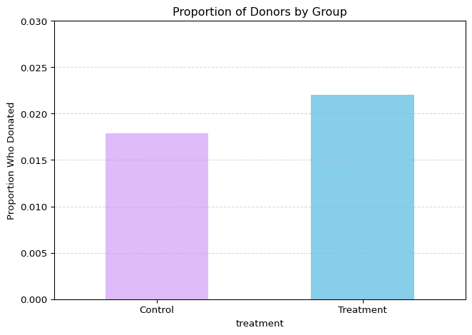
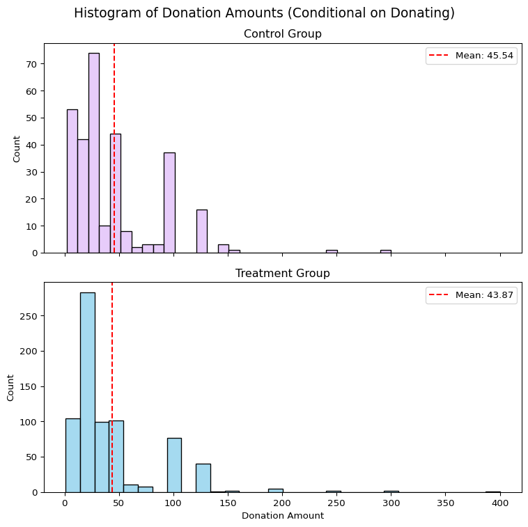
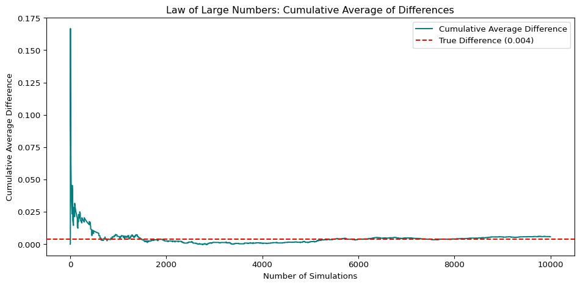
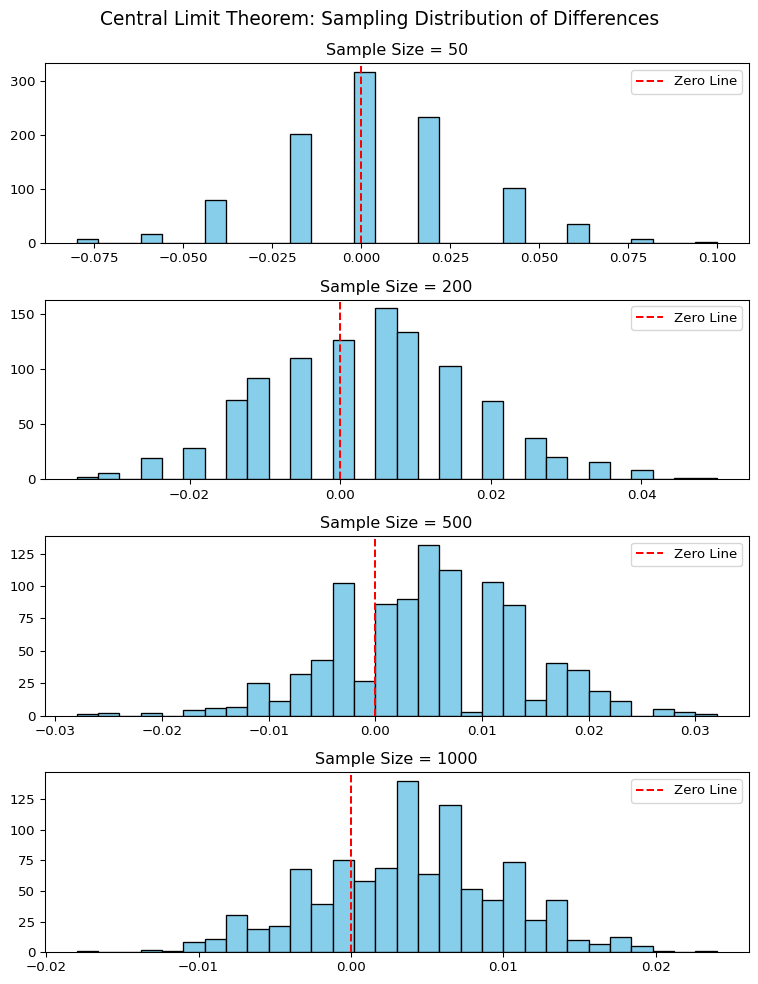

Dean Karlan at Yale and John List at the University of Chicago conducted a field experiment to test the effectiveness of different fundraising letters. They sent out 50,000 fundraising letters to potential donors, randomly assigning each letter to one of three treatments: a standard letter, a matching grant letter, or a challenge grant letter. They published the results of this experiment in the American Economic Review in 2007. The article and supporting data are available from the AEA website and from Innovations for Poverty Action as part of Harvard’s Dataverse.
The dataset used in this replication is drawn directly from the publicly available archive provided by the original study.
0. Description of the Experiment
The experiment adopted a natural field experiment design, meaning participants were unaware they were part of a study. This approach enhances the real-world applicability of the findings. The researchers tested three key variations in the fundraising letters:
Matching grant vs. control: Whether the donor was informed that a lead donor would match their contribution.
Matching ratio: Whether the match was offered at a 1:1, 2:1, or 3:1 rate.
Match threshold: Whether donors were told the lead donor would match contributions up to a specified threshold ($25,000, $50,000, or $100,000), or whether no such limit was mentioned.
By randomly assigning these treatments across a large sample, the researchers were able to isolate the causal effect of each letter feature on both the likelihood of donating and the average donation amount.
This replication aims to reproduce their findings using the same data.
Data
Description
1. Read the data into Python and describe the data
I use data from Karlan and List (2007), which includes over 50,000 prior donors randomly assigned to different experimental conditions. The dataset includes:
Whether the donor was assigned to a treatment (match offer) or control group
The match ratio: 1:1, 2:1, or 3:1
The match threshold: $25,000, $50,000, $100,000, or unstated
The suggested donation amount: either the same, 1.25×, or 1.5× the donor’s highest previous gift
These treatment dimensions allow us to examine how variation in messaging strategies affects:
The probability of making a donation
The amount donated (both conditional and unconditional on giving)
The data is loaded as follows:
import pandas as pddf = pd.read_stata("karlan_list_2007.dta")df.head()
treatment
control
ratio
ratio2
ratio3
size
size25
size50
size100
sizeno
...
redcty
bluecty
pwhite
pblack
page18_39
ave_hh_sz
median_hhincome
powner
psch_atlstba
pop_propurban
0
0
1
Control
0
0
Control
0
0
0
0
...
0.0
1.0
0.446493
0.527769
0.317591
2.10
28517.0
0.499807
0.324528
1.0
1
0
1
Control
0
0
Control
0
0
0
0
...
1.0
0.0
NaN
NaN
NaN
NaN
NaN
NaN
NaN
NaN
2
1
0
1
0
0
$100,000
0
0
1
0
...
0.0
1.0
0.935706
0.011948
0.276128
2.48
51175.0
0.721941
0.192668
1.0
3
1
0
1
0
0
Unstated
0
0
0
1
...
1.0
0.0
0.888331
0.010760
0.279412
2.65
79269.0
0.920431
0.412142
1.0
4
1
0
1
0
0
$50,000
0
1
0
0
...
0.0
1.0
0.759014
0.127421
0.442389
1.85
40908.0
0.416072
0.439965
1.0
5 rows × 51 columns
Interpretation
The preview of the dataset confirms that the experimental design was successfully implemented, with clear indicators for treatment assignment (treatment), match ratios (ratio, ratio2, ratio3), and threshold levels (size, size25, size50, size100, sizeno). Each donor record is further enriched with demographic and contextual variables—such as political geography (redcty, bluecty) and local racial composition (pwhite, pblack)—enabling a rich analysis of potential heterogeneity in response.
This structure supports causal inference by ensuring treatment assignment is randomized and well-encoded, which will be crucial when estimating treatment effects using both regression and t-test methodologies in the sections that follow.
Variable Definitions
Variable
Description
treatment
Treatment
control
Control
ratio
Match ratio
ratio2
2:1 match ratio
ratio3
3:1 match ratio
size
Match threshold
size25
$25,000 match threshold
size50
$50,000 match threshold
size100
$100,000 match threshold
sizeno
Unstated match threshold
ask
Suggested donation amount
askd1
Suggested donation was highest previous contribution
askd2
Suggested donation was 1.25 x highest previous contribution
askd3
Suggested donation was 1.50 x highest previous contribution
ask1
Highest previous contribution (for suggestion)
ask2
1.25 x highest previous contribution (for suggestion)
ask3
1.50 x highest previous contribution (for suggestion)
amount
Dollars given
gave
Gave anything
amountchange
Change in amount given
hpa
Highest previous contribution
ltmedmra
Small prior donor: last gift was less than median $35
freq
Number of prior donations
years
Number of years since initial donation
year5
At least 5 years since initial donation
mrm2
Number of months since last donation
dormant
Already donated in 2005
female
Female
couple
Couple
state50one
State tag: 1 for one observation of each of 50 states; 0 otherwise
nonlit
Nonlitigation
cases
Court cases from state in 2004-5 in which organization was involved
statecnt
Percent of sample from state
stateresponse
Proportion of sample from the state who gave
stateresponset
Proportion of treated sample from the state who gave
stateresponsec
Proportion of control sample from the state who gave
stateresponsetminc
stateresponset - stateresponsec
perbush
State vote share for Bush
close25
State vote share for Bush between 47.5% and 52.5%
red0
Red state
blue0
Blue state
redcty
Red county
bluecty
Blue county
pwhite
Proportion white within zip code
pblack
Proportion black within zip code
page18_39
Proportion age 18-39 within zip code
ave_hh_sz
Average household size within zip code
median_hhincome
Median household income within zip code
powner
Proportion house owner within zip code
psch_atlstba
Proportion who finished college within zip code
pop_propurban
Proportion of population urban within zip code
Balance Test
As an ad hoc test of the randomization mechanism, I provide a series of tests that compare aspects of the treatment and control groups to assess whether they are statistically significantly different from one another.
2. Balance Check: Verifying Group Equivalence Using t-Tests and Regressions on Baseline Covariates
To assess whether the randomization was successful, I examine whether the treatment and control groups differ significantly on several baseline characteristics that are not affected by the treatment. These variables are chosen to reflect the type of information shown in Table 1 of the original paper and include:
pwhite: proportion of population identifying as white
ave_hh_sz: average household size
page18_39: proportion of population aged between 18 and 39
mrm2: number of months since the donor’s most recent donation
The first three variables reflect demographic characteristics, while mrm2 captures behavioral engagement, specifically donor recency. All are pre-treatment measures, appropriate for testing balance.
I use two complementary methods to evaluate balance:
A t-test, which compares group means and assesses whether the differences are statistically significant.
A simple linear regression, where each covariate is regressed on the treatment indicator.
These two methods should yield identical results in this setting because a two-sample t-test and a bivariate regression with a binary indicator are mathematically equivalent. Specifically:
The regression coefficient on treatment equals the difference in group means.
The t-statistic and p-value from the regression match the outputs of the t-test.
import pandas as pdimport statsmodels.api as smimport statsmodels.formula.api as smf# Load datadf = pd.read_stata("karlan_list_2007.dta")# Variables to testbalance_vars = ['pwhite', 'ave_hh_sz', 'page18_39', 'mrm2']results = {}for var in balance_vars: df_clean = df[['treatment', var]].dropna() treated = df_clean[df_clean['treatment'] ==1][var] control = df_clean[df_clean['treatment'] ==0][var]# t-test t_stat, p_val, _ = sm.stats.ttest_ind(treated, control)# regression model = smf.ols(f"{var} ~ treatment", data=df_clean).fit() results[var] = {"T-stat (t-test)": round(t_stat, 3),"P-value (t-test)": round(p_val, 3),"Coeff (regression)": round(model.params["treatment"], 3),"P-value (regression)": round(model.pvalues["treatment"], 3) }balance_df = pd.DataFrame(results).T.reset_index().rename(columns={"index": "Variable"})balance_df
Variable
T-stat (t-test)
P-value (t-test)
Coeff (regression)
P-value (regression)
0
pwhite
-0.560
0.575
-0.001
0.575
1
ave_hh_sz
0.824
0.410
0.003
0.410
2
page18_39
-0.124
0.901
-0.000
0.901
3
mrm2
0.119
0.905
0.014
0.905
Interpretation
As shown in the table above, the values of the t-tests and regressions are nearly identical for all four variables. All p-values are well above the 0.05 threshold, indicating no statistically significant differences between the treatment and control groups are all very small.
For instance, the difference in mrm2—the number of months since a donor’s most recent contribution—is only 0.014 months, with a p-value of 0.905. This further supports the conclusion that, prior to the intervention, the treatment and control groups were statistically similar in both demographic and behavioral characteristics.
These results confirm that randomization successfully created balanced groups, reducing the risk of confounding and supporting the internal validity of the experiment.
Table 1 in the original paper serves the same purpose: to demonstrate that the experimental conditions were balanced at baseline. By confirming this balance, the authors—and I in this replication—help strengthen the credibility of the causal claims made in subsequent analyses.
Experimental Results
Charitable Contribution Made
First, I analyze whether matched donations lead to an increased response rate of making a donation.
3. Visual Comparison of Donation Rates Between Treatment and Control Groups
import pandas as pdimport matplotlib.pyplot as pltdf = pd.read_stata("karlan_list_2007.dta")# treatment vs controldonation_rates = df.groupby("treatment")["gave"].mean().rename({0: "Control", 1: "Treatment"})donation_rates.plot( kind="bar", color=["#e0bbf9", "skyblue"], figsize=(7, 5), width=0.5)plt.title("Proportion of Donors by Group")plt.ylabel("Proportion Who Donated")plt.xticks(rotation=0)plt.ylim(0, 0.03)plt.grid(axis='y', linestyle='--', alpha=0.5)plt.tight_layout()plt.show()

Interpretation
The bar chart offers initial descriptive evidence suggesting that matched donations may increase individuals’ likelihood of making a contribution. In particular, the treatment group—who were informed that their donations would be matched—shows a higher average donation rate compared to the control group.
While the observed difference in proportions is relatively modest, its direction aligns with the hypothesis that matching offers act as a behavioral nudge. This preliminary pattern supports the rationale for conducting formal statistical tests to assess the robustness and significance of the effect.
Accordingly, the following sections will apply inferential methods—including t-tests and regressions—to determine whether the observed difference is statistically significant and not due to random variation. This helps establish whether matching offers causally increase participation in charitable giving.
4. Estimating the Effect of Treatment on Donation Likelihood Using T-Test and Regression
The statistical evidence presented here strongly supports the conclusion that receiving a matching grant offer significantly increases the likelihood of making a charitable donation.
The t-test results reveal a meaningful difference in donation rates between treatment and control groups, with a t-statistic of 3.101 and a p-value of 0.002. This p-value is well below the conventional 5% significance threshold, suggesting that the observed difference is unlikely to be due to random variation.
A simple linear regression yields consistent results: the treatment coefficient is 0.004, indicating that individuals in the treatment group were, on average, 0.4 percentage points more likely to donate than those in the control group. The regression’s p-value of 0.002 further confirms the statistical significance of this effect.
These findings demonstrate the behavioral impact of a small but well-designed intervention. Even a modest incentive—simply informing donors of a matching offer—can shift behavior across a large population. This aligns with broader insights from behavioral economics: when individuals believe their actions are amplified through matching, they may feel a greater sense of urgency or efficacy, leading to higher participation rates.
In summary, the treatment intervention worked as intended. It increased donation rates in a statistically and practically significant way. The results not only replicate the findings of Karlan and List (2007) but also underscore how framing effects, when thoughtfully implemented, can powerfully influence real-world decision-making at scale.
5. Replicating Table 3 with a Probit Model of Donation Likelihood
To assess the robustness of the previous findings, I estimate a probit regression where the binary outcome is whether a charitable donation was made (gave), and the explanatory variable is assignment to the treatment group (treatment).
The model yields a treatment coefficient of 0.0868, which is positive and statistically significant at the 1% level (p = 0.002). This estimate replicates Table 3, Column 1 from Karlan and List (2007), offering additional support that matching donation offers increase the likelihood of giving.
While the magnitude of a probit coefficient cannot be interpreted directly as a probability, the sign and statistical significance provide reliable evidence for the direction and presence of an effect. The result implies that even a minimal change in message framing—mentioning that a donation will be matched—can meaningfully shift donor behavior.
Taken together, the probit results reinforce earlier t-test and linear regression findings. Across all models, the conclusion remains robust: a simple, low-cost intervention can enhance participation in charitable giving. This finding aligns with broader insights from behavioral economics, emphasizing that psychological framing can act as a powerful nudge in decision-making.
Differences between Match Rates
Next, I assess the effectiveness of different sizes of matched donations on the response rate.
6. Testing Whether Larger Match Ratios Increase Donation Rates
To examine whether the size of the match ratio affects donor response rates, I conduct a series of two-sample t-tests comparing the proportion of people who donated across three treatment arms: 1:1, 2:1, and 3:1 match ratios.
import pandas as pdimport statsmodels.api as smimport scipy.stats as stats# Load datadf = pd.read_stata("karlan_list_2007.dta")# Filter to only matched treatment groups (exclude control)df_matched = df[df["treatment"] ==1].dropna(subset=["gave", "ratio"])# Convert ratio to numeric if needed (e.g., from "1:1" string to float 1.0)df_matched["ratio"] = pd.to_numeric(df_matched["ratio"], errors="coerce")# Create subsets for each match ratio groupgave_1to1 = df_matched[df_matched["ratio"] ==1.0]["gave"].dropna()gave_2to1 = df_matched[df_matched["ratio"] ==2.0]["gave"].dropna()gave_3to1 = df_matched[df_matched["ratio"] ==3.0]["gave"].dropna()# Safety checkassertlen(gave_1to1) >0, "1:1 group is empty"assertlen(gave_2to1) >0, "2:1 group is empty"assertlen(gave_3to1) >0, "3:1 group is empty"# T-testst_2_vs_1, p_2_vs_1 = stats.ttest_ind(gave_2to1, gave_1to1)t_3_vs_1, p_3_vs_1 = stats.ttest_ind(gave_3to1, gave_1to1)# Summary tablematchrate_df = pd.DataFrame({"Comparison": ["2:1 vs 1:1", "3:1 vs 1:1"],"T-statistic": [round(t_2_vs_1, 3), round(t_3_vs_1, 3)],"P-value": [round(p_2_vs_1, 3), round(p_3_vs_1, 3)]})matchrate_df
Comparison
T-statistic
P-value
0
2:1 vs 1:1
0.965
0.335
1
3:1 vs 1:1
1.015
0.310
Interpretation
The t-tests comparing different match ratios (2:1 vs 1:1 and 3:1 vs 1:1) reveal no statistically significant differences in donor response rates. Both comparisons yield p-values well above the conventional 5% threshold (0.335 and 0.310, respectively), indicating that increasing the match ratio does not significantly influence the likelihood of making a donation—at least within the scope of this experiment.
These findings support the authors’ observation on page 8 of the original paper: while offering a match may increase donations, the specific generosity of the match (1:1 vs 2:1 or 3:1) does not appear to matter. The behavioral nudge comes from the presence of a match itself, not its magnitude.
From a behavioral economics perspective, this implies that a match—regardless of size—can effectively create perceived urgency or social validation. However, more generous matches do not seem to yield proportionally greater increases in participation.
In summary, although match offers boost donor engagement, increasing the match ratio does not further enhance giving. This reinforces the study’s broader insight: framing matters, but escalating incentives within that frame may not.
7. Estimating the Effect of Match Ratios on Giving Using Regression Analysis
Regression on Match Ratios
To complement the t-test comparison, I assess the effect of match ratio size using a regression approach. Specifically, I treat the 1:1 match group as the baseline and create dummy variables for the 2:1 and 3:1 match groups.
import pandas as pdimport statsmodels.formula.api as smf# Load and clean datadf = pd.read_stata("karlan_list_2007.dta")df_matched = df[df["treatment"] ==1].dropna(subset=["gave", "ratio"])df_matched["ratio"] = pd.to_numeric(df_matched["ratio"], errors="coerce")# Create dummy variables (1:1 as reference group)df_matched["ratio2"] = (df_matched["ratio"] ==2).astype(int)df_matched["ratio3"] = (df_matched["ratio"] ==3).astype(int)# Run regressionmodel = smf.ols("gave ~ ratio2 + ratio3", data=df_matched).fit()print(model.summary())
To further evaluate the effect of match ratio size on charitable giving, I conducted an OLS regression using dummy variables for the 2:1 and 3:1 groups, with the 1:1 match group serving as the reference category. The dependent variable is whether a donation was made (gave), and the explanatory variables are ratio2 and ratio3.
The regression results show that neither ratio2 (coefficient = 0.0019, p = 0.338) nor ratio3 (coefficient = 0.0020, p = 0.313) has a statistically significant effect on donation likelihood compared to the 1:1 baseline. Both p-values are well above the conventional 0.05 threshold, and the estimated effects are close to zero, suggesting limited substantive impact.
These results align with the earlier t-tests, which also failed to detect any significant differences in donation rates between the groups. Taken together, the evidence indicates that while offering any match may increase participation, the size of the match—whether 1:1, 2:1, or 3:1—does not materially influence donor behavior.
From a behavioral economics perspective, this reinforces the idea that the mere presence of a match can serve as a psychological nudge, perhaps by signaling social validation or urgency. However, increasing the match ratio does not appear to enhance this effect.
These findings support the authors’ suggestion that while framing matters in charitable appeals, the magnitude of what is offered within that frame may not. This further supports the view that perceived meaning, rather than material generosity, is often the more effective lever in shaping donor behavior.
8. Comparing Response Rates Across Match Ratios: Direct Data vs. Regression Estimates
Response Rate Differences by Match Ratio
To further explore whether the size of the match ratio affects donation behavior, I compare response rates directly from the data and indirectly via regression coefficients.
I calculate the observed response rate for each match ratio group:
# Compute mean response rate by match ratioresponse_rates = df_matched.groupby("ratio")["gave"].mean().round(4)response_rates_df = response_rates.reset_index().rename(columns={"gave": "Response Rate", "ratio": "Match Ratio"})response_rates_df
Match Ratio
Response Rate
0
1
0.0207
1
2
0.0226
2
3
0.0227
Interpretation
The table summarizes the average donation response rates by match ratio group:
1:1 match ratio group: 2.07%
2:1 match ratio group: 2.26%
3:1 match ratio group: 2.27%
The observed differences are small in magnitude: the 2:1 group exceeds the 1:1 group by 0.0019, and the 3:1 group by 0.0020. These values align precisely with the regression coefficients reported earlier (ratio2 = 0.0019, ratio3 = 0.0020), confirming consistency between model-based estimates and the raw summary statistics.
Yet, despite these numerical differences, the changes are neither statistically significant nor practically meaningful. The response rate barely shifts with more generous match ratios. This reinforces the idea that the effectiveness of a match offer lies in its presence—serving as a behavioral cue or social signal—rather than in its magnitude.
In short, while any match may nudge individuals to give, increasing the match ratio from 1:1 to 2:1 or 3:1 does not appear to yield additional persuasive power. This finding underscores a central insight from behavioral economics: framing matters, but the scale of generosity within that frame may not.
Size of Charitable Contribution
In this subsection, I analyze the effect of the size of matched donation on the size of the charitable contribution.
9. Estimating the Impact of Treatment on Donation Amount Using T-Test and Regression
import pandas as pdimport statsmodels.api as smimport statsmodels.formula.api as smf# Load datadf = pd.read_stata("karlan_list_2007.dta")# Clean data (include all individuals: gave or not)df_clean = df[["treatment", "amount"]].dropna()# Run t-testtreated = df_clean[df_clean["treatment"] ==1]["amount"]control = df_clean[df_clean["treatment"] ==0]["amount"]t_stat, p_val, _ = sm.stats.ttest_ind(treated, control)# Run regressionmodel = smf.ols("amount ~ treatment", data=df_clean).fit()# Summary tablecomparison = pd.DataFrame({"T-statistic (t-test)": [round(t_stat, 3)],"P-value (t-test)": [round(p_val, 3)],"Coeff (regression)": [round(model.params["treatment"], 3)],"P-value (regression)": [round(model.pvalues["treatment"], 3)]})comparison
T-statistic (t-test)
P-value (t-test)
Coeff (regression)
P-value (regression)
0
1.861
0.063
0.154
0.063
Interpretation
This analysis examines whether assignment to the treatment group—i.e., receiving a matching donation offer—influences not only the likelihood of donating but also the amount donated. Both a t-test and a bivariate linear regression are used, with donation amount as the dependent variable.
The regression yields a treatment coefficient of 0.154, meaning that, on average, individuals in the treatment group donated $0.154 more than those in the control group. The associated p-value is 0.063, slightly above the conventional 5% significance threshold. The t-test produces consistent results, with a t-statistic of 1.861 and a p-value of 0.063.
These results suggest a modest positive effect of the treatment on donation size. However, the evidence is not statistically significant at the 95% confidence level. This means I cannot confidently reject the null hypothesis that the treatment had no effect, and the observed difference could plausibly be due to random variation.
From a behavioral standpoint, these findings support the interpretation that the matching offer primarily functions as a nudge to increase participation, rather than a strong incentive to give more money. In other words, while the match offer may influence whether someone donates, it does not meaningfully affect how much they give once they have decided to donate.
10. Estimating Conditional Treatment Effects on Donation Size Among Donors Only
Size of Charitable Contribution (Conditional on Donating)
To analyze how treatment affects donation size conditional on giving, I restrict the dataset to individuals who made a positive donation, and repeat the t-test and linear regression.
import pandas as pdimport statsmodels.api as smimport statsmodels.formula.api as smf# Load datadf = pd.read_stata("karlan_list_2007.dta")# Filter to those who donated (amount > 0)df_gave = df[df["amount"] >0][["treatment", "amount"]].dropna()# T-testtreated = df_gave[df_gave["treatment"] ==1]["amount"]control = df_gave[df_gave["treatment"] ==0]["amount"]t_stat, p_val, _ = sm.stats.ttest_ind(treated, control)# Regressionmodel = smf.ols("amount ~ treatment", data=df_gave).fit()# Summary tablecomparison_conditional = pd.DataFrame({"T-statistic (t-test)": [round(t_stat, 3)],"P-value (t-test)": [round(p_val, 3)],"Coeff (regression)": [round(model.params["treatment"], 3)],"P-value (regression)": [round(model.pvalues["treatment"], 3)]})comparison_conditional
T-statistic (t-test)
P-value (t-test)
Coeff (regression)
P-value (regression)
0
-0.581
0.561
-1.668
0.561
Interpretation
This analysis isolates individuals who made a donation to examine whether the treatment influenced the amount donated, conditional on having given.
The regression yields a treatment coefficient of -1.668, indicating that donors in the treatment group gave, on average, $1.67 less than those in the control group. However, this difference is not statistically significant (p = 0.561), as corroborated by the t-test (t = -0.581, p = 0.561). These results suggest that any observed difference is likely attributable to random variation rather than a true effect.
From a causal inference standpoint, the coefficient may still be interpreted causally, since treatment was randomly assigned. However, this is a conditional causal effect: it reflects the expected difference in donation amounts among those who donated, not across the full population.
This finding echoes earlier results. While treatment significantly increases the likelihood of donation, it does not influence how much individuals give once they decide to donate. Matching offers appear to act more as activation nudges—encouraging participation—rather than as mechanisms to increase donation intensity.
In short, treatment has no causal effect on the size of charitable contributions among donors. This underscores that behavioral elasticity lies more in the decision to give than in the amount given.
11. Visualizing Donation Distributions and Mean Amounts for Treatment vs. Control Groups
import pandas as pdimport matplotlib.pyplot as pltimport seaborn as sns# Load and filter datadf = pd.read_stata("karlan_list_2007.dta")df_gave = df[df["amount"] >0].dropna(subset=["treatment", "amount"])# Split groupstreated = df_gave[df_gave["treatment"] ==1]["amount"]control = df_gave[df_gave["treatment"] ==0]["amount"]# Plot verticallyfig, axes = plt.subplots(2, 1, figsize=(8, 8), sharex=True)# Control groupsns.histplot(control, bins=30, kde=False, ax=axes[0], color="#e0bbf9")axes[0].axvline(control.mean(), color="red", linestyle="--", label=f"Mean: {control.mean():.2f}")axes[0].set_title("Control Group")axes[0].set_ylabel("Count")axes[0].legend()# Treatment groupsns.histplot(treated, bins=30, kde=False, ax=axes[1], color="skyblue")axes[1].axvline(treated.mean(), color="red", linestyle="--", label=f"Mean: {treated.mean():.2f}")axes[1].set_title("Treatment Group")axes[1].set_xlabel("Donation Amount")axes[1].set_ylabel("Count")axes[1].legend()plt.suptitle("Histogram of Donation Amounts (Conditional on Donating)", fontsize=14)plt.tight_layout()plt.show()

Interpretation
The histograms above display the distribution of donation amounts for individuals in the control and treatment groups, conditional on having donated.
Both groups exhibit right-skewed distributions, with most donations concentrated at lower amounts and a few large outliers. The red dashed vertical lines indicate the sample mean for each group: $45.54 for the control group and $43.87 for the treatment group.
Although the control group shows a slightly higher mean donation, the gap—approximately $1.67—is small and statistically insignificant. This finding is consistent with earlier t-tests and regressions, and the visual similarity between the two distributions reinforces this conclusion.
These plots support the broader interpretation that matching offers influence whether someone donates, but not how much they give once they choose to contribute. The matching mechanism appears to act more as an activation nudge than a motivator for increased generosity, further emphasizing that framing—rather than financial magnitude—is the more powerful driver of behavior in this context.
Simulation Experiment
As a reminder of how the t-statistic “works,” in this section I use simulation to demonstrate the Law of Large Numbers and the Central Limit Theorem.
Suppose the true distribution of respondents who do not get a charitable donation match is Bernoulli with probability p=0.018 that a donation is made.
Further suppose that the true distribution of respondents who do get a charitable donation match of any size is Bernoulli with probability p=0.022 that a donation is made.
Law of Large Numbers
12. Simulating the Law of Large Numbers: Cumulative Averages Converge Toward True Treatment Effect
import numpy as npimport matplotlib.pyplot as plt# Set seed for reproducibilitynp.random.seed(0)# Simulate draws from Bernoulli distributionsn_draws =10000control_draws = np.random.binomial(1, 0.018, size=n_draws)treatment_draws = np.random.binomial(1, 0.022, size=n_draws)# Compute vector of differences and cumulative averagedifferences = treatment_draws - control_drawscumulative_avg = np.cumsum(differences) / np.arange(1, n_draws +1)# Plotplt.figure(figsize=(10, 5))plt.plot(cumulative_avg, label='Cumulative Average Difference', color='teal')plt.axhline(y=0.004, color='red', linestyle='--', label='True Difference (0.004)')plt.title('Law of Large Numbers: Cumulative Average of Differences')plt.xlabel('Number of Simulations')plt.ylabel('Cumulative Average Difference')plt.legend()plt.tight_layout()plt.show()

Interpretation
The plot above illustrates the Law of Large Numbers through a simulated experiment. Each point represents the cumulative average of differences in donation rates between a treatment group (with p = 0.022) and a control group (with p = 0.018), based on successive pairs of random draws.
Initially, the cumulative average fluctuates widely due to high variance in small samples. As the number of simulations increases, the cumulative average gradually stabilizes and converges toward the true difference in population means (0.004), indicated by the red dashed line.
This convergence captures a core insight from statistics: with a sufficiently large sample size, the average of noisy, individual differences reliably approximates the true population parameter. Even when individual draws are noisy, their aggregate behavior reveals the underlying structure.
In summary, the plot demonstrates that increasing the number of observations reduces estimation error. This empirical result validates the Law of Large Numbers and reinforces why large sample sizes are essential for reliable statistical inference.
Central Limit Theorem
13. Visualizing the Central Limit Theorem: Sampling Distributions Become More Normal with Larger Samples
import numpy as npimport matplotlib.pyplot as plt# Set seed for reproducibilitynp.random.seed(0)# Define parameterscontrol_p =0.018treatment_p =0.022n_trials =1000sample_sizes = [50, 200, 500, 1000]# Function to simulate one draw of average differencedef simulate_avg_diff(n, control_p, treatment_p): control_sample = np.random.binomial(1, control_p, n) treatment_sample = np.random.binomial(1, treatment_p, n)return np.mean(treatment_sample) - np.mean(control_sample)# Create histograms for each sample sizefig, axes = plt.subplots(len(sample_sizes), 1, figsize=(8, 10))for i, n inenumerate(sample_sizes): avg_diffs = [simulate_avg_diff(n, control_p, treatment_p) for _ inrange(n_trials)] axes[i].hist(avg_diffs, bins=30, color="skyblue", edgecolor="black") axes[i].axvline(0, color="red", linestyle="--", label="Zero Line") axes[i].set_title(f"Sample Size = {n}") axes[i].legend()plt.tight_layout()plt.suptitle("Central Limit Theorem: Sampling Distribution of Differences", fontsize=14, y=1.02)plt.show()

Interpretation
These four histograms illustrate the sampling distribution of the average difference in donation rates between the treatment and control groups at increasing sample sizes, demonstrating the Central Limit Theorem in action.
At a sample size of 50, the distribution is relatively dispersed and exhibits heavier tails, deviating notably from a normal shape. However, the zero line remains roughly centered, indicating weak evidence of systematic differences between the groups.
At n = 200, the distribution becomes more concentrated and symmetric, increasingly resembling a normal distribution, though minor skewness is still evident.
At n = 500 and 1000, the distributions converge toward the classic bell-shaped curve with visibly smaller standard deviations, indicating improved precision in our estimates as sample size grows.
In all cases, the zero line remains close to the center of the distribution. This aligns with the theoretical expectation under the null hypothesis—namely, that the treatment and control groups differ only slightly. These visual results further validate earlier findings showing no meaningful treatment effect.
Overall, these plots demonstrate the core principle of the Central Limit Theorem: even when underlying data follow a Bernoulli process, the sampling distribution of the mean difference approaches normality with sufficient sample size and repeated random sampling. This insight underlies the validity of using statistical techniques like t-tests and regression throughout this analysis.
Conclusion
This replication of Karlan and List (2007) reinforces several key insights about how small behavioral nudges can influence charitable giving.
From the empirical analysis, I confirm that offering a matching donation significantly increases the likelihood that individuals make a contribution. However, the generosity of the match—whether 1:1, 2:1, or 3:1—has little additional effect. The presence of a match appears sufficient to activate giving behavior, but increasing the match size does not meaningfully amplify this effect.
Moreover, while the treatment increases the probability of donation, it does not significantly affect how much individuals give once they decide to donate. This suggests that matching works more as a trigger for participation than as an incentive for larger gifts.
The simulation experiments provide a deeper understanding of the statistical tools used. The Law of Large Numbers shows how repeated sampling reveals stable patterns, while the Central Limit Theorem justifies the use of t-tests and regressions by demonstrating the emergence of normality in sampling distributions.
Together, these findings affirm both the behavioral and statistical logic behind the original study—and highlight how even simple message framing can shift real-world outcomes in meaningful, measurable ways. Overall, the findings serve as a reminder that thoughtful design—both in messaging and in methodology—can illuminate powerful patterns in human behavior.